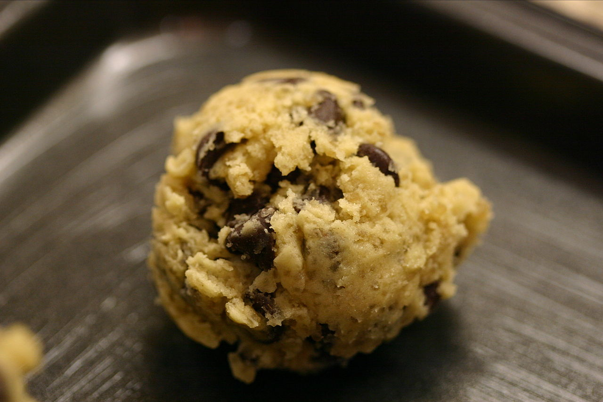

Description
Have you ever just wanted to eat cookie dough that you are about to put in
the oven, then thought better of it because you didn't want to get
Salmonella poisoning? Well now you can! This cookie dough is just for
eating. I have made this with friends before and they said that they loved
the taste. So do I. The leftovers will keep in the freezer for up to 3
months.
Ingredients
- ¾ cup packed brown sugar
- ½ cup butter
- 1 teaspoon vanilla extract
- ½ teaspoon salt
- 1 cup all-purpose flour
- 2 tablespoons milk
- ½ cup milk chocolate chips
- ½ cup mini chocolate chips
Steps
-
Combine brown sugar and butter in a large bowl; beat with an electric
mixer until creamy. Beat in vanilla extract and salt. Add flour; mix
until a crumbly dough forms. Mix in milk. Fold in milk chocolate chips
and mini chocolate chips.
home